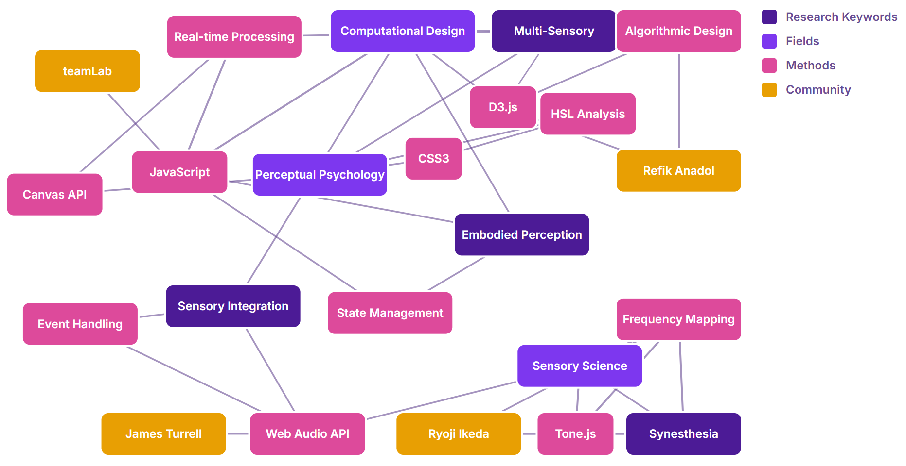
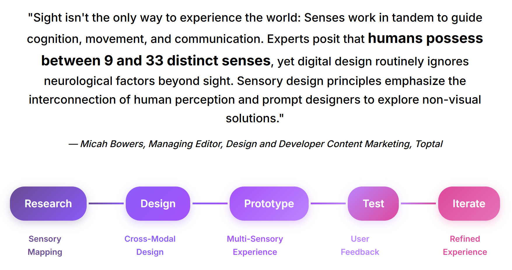

Sensing Senses
Computational Design for Sensory Integration
Romayssae El Idrissi
How can computational design create new sensory experiences
that transcend the traditional five-sense model?
Aristotle, 350 BC
De Anima established the five-sense model that has dominated Western thought for millennia
Descartes, 1662
Treatise on Man mechanized the senses, treating them as computational systems
Newton, 1704
Opticks separated light into discrete colors, further fragmenting sensory experience
Refik Anadol - Machine Hallucination (2019)
AI-generated multi-sensory environments that challenge traditional sensory boundaries
TeamLab - Borderless (2018)
Immersive digital art installations that create unified sensory experiences
Rafael Lozano-Hemmer - Pulse Room (2006)
Interactive installations that use computational systems to create embodied sensory experiences
Ryoji Ikeda - Data-verse (2019)
Data-driven art that translates abstract information into visceral sensory experiences
Computational Design Experiments
Hear Textures
Amethyst Sound Machine - Interactive crystals generating soothing tones
Taste Colors
RGB color analysis maps to complex taste profiles through algorithmic layering
Research & Capstone Outline
Research Network
Interdisciplinary connections across computational design, sensory studies, and interactive media

Capstone Project
Advanced multi-sensory computational design system for embodied experience

"Embedded is a question, namely, whether there is an oppositional space to the computable, and if there is such a thing as incomputable qualities, ideas, or experiences. And perhaps we intuitively know the answer—yes—but how do we capture what's ineffable, and what's incomputable?"
— Khan, Nora N. 2022. Mirror Stage: Between Computability and Its Opposite. HOLO 3.